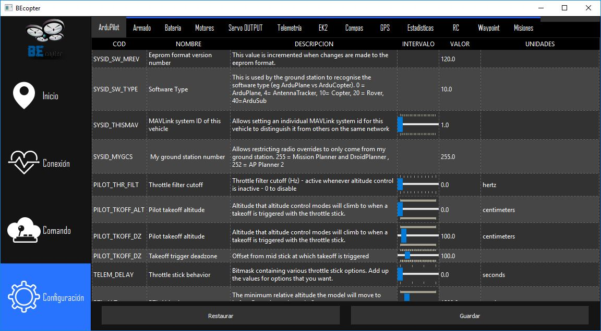

Pestaña de Configuración¶
{kind=link}
Por último BEcopter proporciona la posibilidad de modificar los parámetros de configuración del Autopiloto los cuales determina el comportamiento del vehículo, como puede ser velocidad de despegue, voltaje máximo enviado a los motores, condiciones de pre-armado como también información del uso del vehículo, entre otras cosas.
BEcopter ha organizado los parámetros del vehículo en secciones, para una mejor organización. Por lo tanto, tenemos las siguientes pestañas
- Parámetros generales: Se configuran aspectos generales del Autopiloto, como restricciones en velocidad, altitud , posición en cada modo.
- Armado En este apartado encontraras los parámetros para el pre-armado.
- Batería Aquí se tendrá todo en cuenta los aspectos generales de la batería, como definir el tipo de batería instalada y sus propiedades.
- Motores El comportamiento de los motores al momento de realizar algún tipo de acción se puede definir en este apartado, como también sus respectivas restricciones.
- Servo OUTPUT: Además de poder configurar los motores, es posible administrar los pines extras en el cual pueden estar conectados servo motores. Como por ejemplo la frecuencia de la señal emitida en PWM.
- Telemetría: Se definen todas las características del módulo de telemetría instalado en su vehículo.
- EK2: Extended Kalman Filter v2 o Filtro extendido de Kalman (+info) , es un algoritmo de estimación de posición, velocidad y angulación del vehículo según los datos provenientes de los sensores como el giroscopio, acelerómetro, compás, GPS, velocidad del viento y barómetro. Esto ayuda al Autopiloto tener un conocimiento del estado del vehículo, por lo tanto, al ser un algoritmo parametrizable el mismo puede configurarse en esta pestaña.
- Compas: Se muestran todas las características del compás instalado en su vehículo.
- GPS Se muestran todas las características configurables del GPS instalado en su vehículo.
- Estadisticas: Se muestra información de las horas de vuelo, cantidad de inicios del sistema y de reinicios del Autopiloto.
- Radio Control: Se muestran todas las características configurables del RC instalado en su vehículo. Como la restricción de sus correspondientes canales (Yaw, Pitch, Roll y Throttle).
- WayPoints: Cuando se realicen misiones, el vehículo se debe mover de un punto a otro a una cierta velocidad, como también puede acelerar, entre otras cosas. Aquí se podrá configurar dicho comportamiento.
- Misiones: En esta pestaña dedicada a las misiones se tendrá información sobre el total de misiones que se pueden cargar y el comportamiento del vehículo al momento de cambiar entre control manual y automático.
Advertencia
La manipulación de estos valores queda sumamente bajo la responsabilidad del usuario. En caso de necesitar información extra puede consultar la siguiente enlace de MAVLink que es el protocolo que se utiliza para la comunicación entre el vehículo y BEcopter.